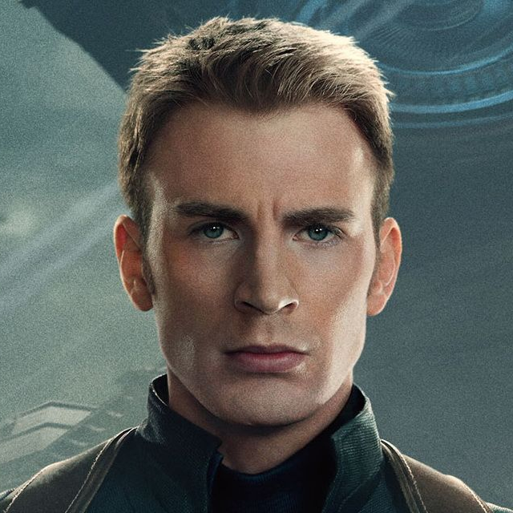

CAPTAIN AMERICA
El valiente deseo de Rogers de luchar contra los matones dondequiera que estuvieran llamó la atención del científico Dr. Abraham Erskine, quien eligió al joven idealista para el programa de Súper Soldados del Ejército bajo su supervisión.El Ejército se movió rápidamente para crear una personalidad colorida y llena de estrellas para Steve Rogers, al que llamaron "Capitán América", y lo puso en una gira para vender bonos de guerra. Irritado por lo que sintió que era inacción, Rogers aprovechó la oportunidad de unirse a la lucha real cuando recibió la noticia de la captura de la división del ejército de su amigo Barnes y se apresuró a rescatar a los soldados.